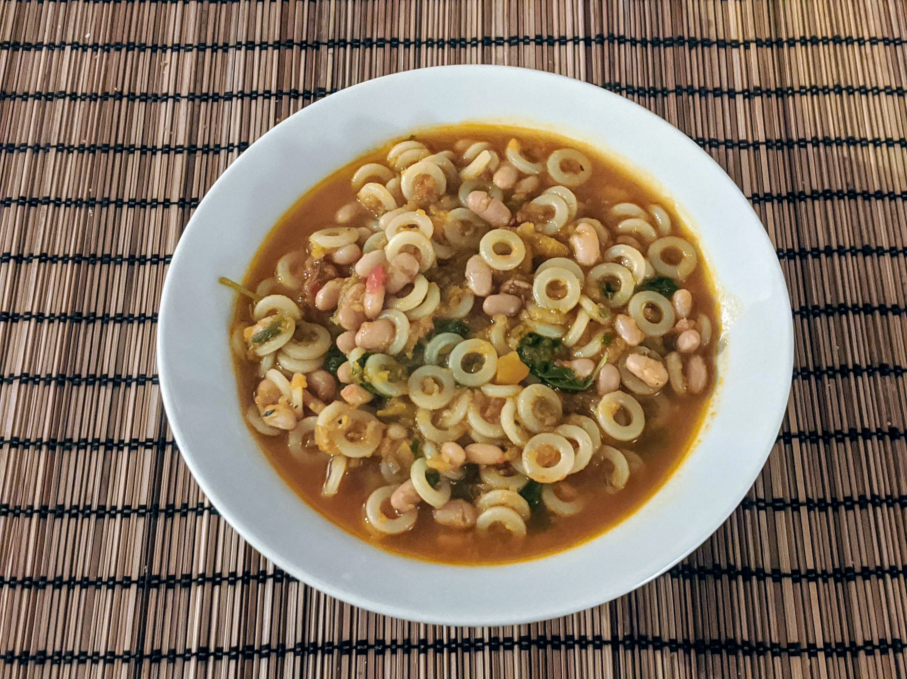

Pasta e Fagioli

Pour 4-5 personnes :
- 200g de haricots blancs secs
- 4 carottes
- Un poireau
- Une bonne grosse poignée de brocoli-rave (ou de chou palmier, de chou frisé, d'épinards…)
- 6 gousses d'ail
- Une boîte (400mL) de tomates concassées
- Un bouquet garni
- 200g de petites pâtes
- Du bouillon de légumes
- Faire tremper les haricots blancs dans un saladier pendant une nuit.
- Éplucher les carottes et l'ail, laver les poireaux, les couper en gros morceaux, et les mixer pour les couper en tout petits bouts.
- Les mettre dans une grande cocotte avec une quantité généreuse d'huile d'olive, de sel et de poivre. Faire revenir à feu moyen-fort pendant quelques minutes, puis diminuer le feu et cuire à feu moyen-doux environ un quart d'heure pour que les légumes perdent leur eau et deviennent bien mous. Enfin, augmenter un peu le feu et faire revenir un bon quart d'heure, pour que ça réduise (au moins de moitié) et que ça brunisse.
- Laver et couper le brocoli-rave en morceaux en enlevant les troncs un peu trop gros. Les ajouter dans la cocotte avec les haricots et leur eau de trempage, les tomates, et le bouquet garni. Mélanger et faire bouillir.
- Faire cuire à feu moyen-doux pendant 2-3 heures en rajoutant du bouillon de légumes au fur et à mesure pour que les haricots baignent en permanence (avec bien 3cm de marge). Ou bien, ajouter d'emblée une bonne dose de bouillon, et faire cuire pendant ~8 heures dans une mijoteuse.
- Faire cuire les pâtes dans une grosse casserole d'eau salée, 2-3 minutes de moins qu'indiqué sur le paquet. Les égoutter et les ajouter dans la soupe pour finir de les cuire.
Remarque : c'est important de ne pas faire le malin et cuire les pâtes entièrement dans la soupe, si on fait ça le tout devient pâteux.